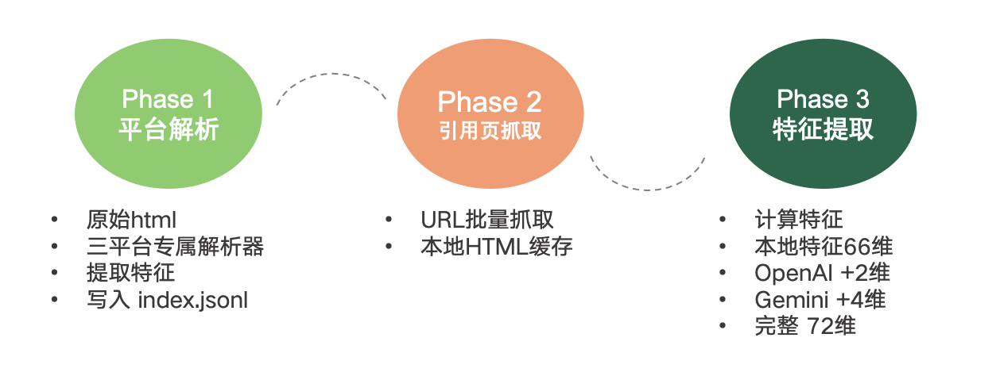
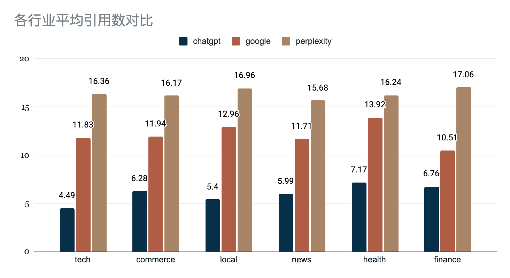
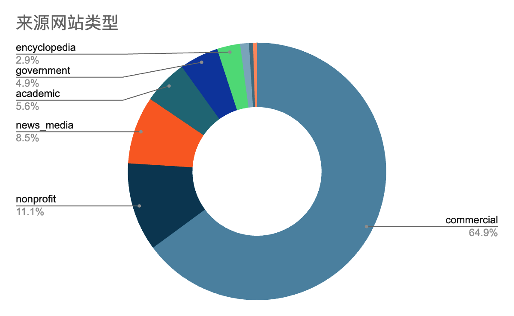

这份目录不是一篇孤立的论文，而是一套覆盖 Prompt 设计、三平台联网触发、引用页抓取、72 维特征提取 与 成稿发布 的完整研究资产。最重要的判断有两个：第一，三大平台的搜索与引用策略明显分化，Perplexity 搜得最勤，ChatGPT 引得最少但吃得最深；第二，真正决定 AI 深度吸收的，并不是“像营销稿一样会写”，而是 长、结构清楚、带数据、语义贴题 的事实型内容。
本章先回答一个基础问题：我究竟在审什么。只有把这套目录当成“研究输入 + 中间数据 + 执行代码 + 现成输出”的组合资产，而不只是 `final_report.pdf`，后面的结论才有说服力。
按目录逐项盘点，当前资料包共有 60 个文件。结构上可以分成五层：`README.md` 解释交付物边界；`01-prompt/` 提供 9 份实验输入文本，总计 602 条 Prompt；`02-data/` 存放 7 份结果与特征 CSV；`03-pipeline/` 含 15 个研究脚本和 1 份依赖清单；`04-repet/` 则给出 Markdown / HTML / PDF 三种报告形态，以及 22 张配图和一个 HTML 打包脚本。除此之外，还有 1 个 macOS 元数据文件 `.DS_Store`，它不承载研究内容，只是系统痕迹。
现成输出里，`final_report.md` 是叙事主稿，`final_report.html` 是自包含渲染版，`final_report.pdf` 为 57 页 的阅读版。图像目录里共有 22 张 图表，其中 20 张 被 Markdown 正文实际引用，另外两张 `2.1.b3.png` 与 `2.1.b4.png` 是未入稿的补充表，分别展示 ChatGPT 的 Top10 引用域名和行业评级表。
这份资料包最有价值的地方，不在于它已经写出一份长报告，而在于它保留了足够多的“前后件”，使我们可以反问：这些结论是否真的站在数据上，还是只停留在可读但不可复算的描述层。换句话说，我这次的目标不是再写一遍原报告，而是把 证据链、工程质量和策略含义 同时拎出来。
如果只读 PDF，你得到的是结论；如果把 prompts、CSV、pipeline 和图表一起读，你得到的是结论为什么成立，以及它还能不能被再次算出来。 — 本次文件审计过程，2026.04
| 维度 | 当前水平 | 目标水平 | 差距 |
|---|---|---|---|
| 研究覆盖 | 60 文件 / 602 Prompt / 23,745 条引用特征 | 可追溯、可复核、可扩展 | 主体完整，已具备研究资产雏形 |
| 数据可用性 | `fetch_ok` 成功率约 76.44% | 抓取成功率 > 90% | 外站抓取损耗仍偏高 |
| 数据整洁度 | ChatGPT 结果表含 16 条重复表头；Perplexity 网站类型列被污染 | 规范命名、无脏行、无混列 | 中度工程清洗缺口 |
| 复现实验性 | 多脚本硬编码本地路径、令牌和 API Key | 参数化配置 + 密钥外置 | 明显缺口，且带安全风险 |
这一章同时交代“我如何读完这 60 个文件”以及“原研究如何生成核心结论”。没有方法论交代，任何总结都只是转述；有了方法论，结论才是可站住的判断。
本次审阅不是只看 `final_report.md`。我的处理顺序是：先用 `README.md` 建立目录地图；逐个读取 9 份 Prompt 文本确认实验设计；对 7 份 CSV 复核真实行数、字段和关键分布；再回到 16 份脚本里确认 HTML 解析、抓取、特征计算和报告生成逻辑；最后抽检现成的 HTML / PDF / 图像资产，看“叙事版本”和“底层数据版本”是否一致。也就是说，这份新报告既吸收原成稿的结构，也直接站在 raw 表和 pipeline 代码上。

从代码实现看，`chatgpt_extract.py`、`google_extract.py` 与 `perplexity_extract.py` 分别针对三平台 HTML 做专用解析；`run_all.py` 负责统一扫描平台结果、去重 URL、共享抓取缓存；`fetch_utils.py` 实现域名级限速、退避重试、JS challenge 探测和浏览器回退；`citation_features.py` 再把每条问答展开成“每个引用一行”的特征表，并叠加本地文本特征、OpenAI Embedding 相似度和 Gemini 语义评分。
influence_score =
0.20 x min(ref_count / 3, 1)
+ 0.15 x (1 - first_position_ratio)
+ 0.20 x paragraph_coverage_ratio
+ 0.25 x tfidf_cosine
+ 0.20 x (bigram_overlap + trigram_overlap) / 2上面这段并不是推测，而是直接来自 `citation_features.py`。它说明这套研究不是模糊地讲“被引用”，而是试图量化 被用得有多深：引用次数、位置靠前程度、覆盖多少段落，以及回答文本与被引页面在词面上的重叠程度，都被纳入统一打分。
从搜索结果表复核，三平台在“是否联网”和“联网后引用多少”上已经明显分化。ChatGPT 在现有有效 Prompt 里约有 98.64% 会触发搜索，但每题平均只引 6.98 个来源；Google 的触发率约 99.67%，平均引用 12.10；Perplexity 直接达到 100% 触发，平均引用 16.35。但如果看 `features_all_platforms_72.csv` 的平均 `influence_score`，顺序反了：ChatGPT 为 0.2567，明显高于 Google 的 0.0455 和 Perplexity 的 0.0548。
| 平台 | 结果表有效 Prompt 数 | 搜索触发率 | 平均引用数 / Prompt | 平均 Final DR | 平均 influence_score | 策略判断 |
|---|---|---|---|---|---|---|
| ChatGPT | 587 | 98.64% | 6.88 | 584.6 | 0.2567 | 少量引用，但单条引用被深度吸收 |
| Google AI Overview | 602 | 99.67% | 12.06 | 541.15 | 0.0455 | 广撒网式引用，更像搜索摘要引擎 |
| Perplexity | 602 | 100% | 16.35 | 558.33 | 0.0548 | 搜索最积极，引用最广，但单条利用较浅 |

这个差异意味着，GEO 不是“一套内容打三家”就够了。要打 ChatGPT，需要让单页内容足够完整、足够权威，能被模型在回答中反复借用；要打 Google 和 Perplexity，则更像优化“被纳入候选池”的广度，要求来源覆盖多、匹配快、可被快速拼装。
在抓取成功页面中，对 Top 10% 与 Bottom 10% 影响力引用页做对比，差距几乎是一眼就能看出来的：高影响力页平均词数约为 2,095.96，低影响力页只有 53.49；标题总数 11.77 vs 0.38，段落数 54.92 vs 5.29，标题与问题匹配度 0.1482 vs 0.0619，Embedding 相似度 0.6047 vs 0.1498，LLM 相关性评分 4.02 vs 1.76。这组差值非常直接地说明：AI 偏爱的是能拆、能摘、能搬运的结构化事实页。
| 指标 | Top 10% 影响力页 | Bottom 10% 影响力页 | 判断 |
|---|---|---|---|
| 词数 | 2,095.96 | 53.49 | 篇幅是最强区分项 |
| 标题总数 | 11.77 | 0.38 | 层级越清楚，越容易被引用 |
| 段落数 | 54.92 | 5.29 | 可切分内容更适合模型复用 |
| 标题-问题匹配度 | 0.1482 | 0.0619 | 语义贴题是基础门槛 |
| Embedding 相似度 | 0.6047 | 0.1498 | 语义对齐直接决定被用深度 |
| LLM 相关性评分 | 4.02 | 1.76 | 模型主观评分与行为结果一致 |
长度分箱结果也验证了同一趋势：`<=300` 词页面的平均影响力约为 0.0616，而 `1501-3000` 与 `3000+` 两档分别上升到 0.1306 和 0.1457。这和原报告中“1000-3000 词是实践甜点区间”的判断并不矛盾。前者是纯统计值，后者是内容生产 ROI 的经验建议：更长通常更有利，但不是每个场景都值得无限拉长。
如果把被引页面按语义角色和影响类型拆开看，最吃香的并不是观点页，而是定义、比较、证据和事实基础。按 `llm_semantic_role` 的平均影响力，`definition`、`comparison`、`evidence` 的均值分别约为 0.1531、0.1524、0.1235；按 `llm_influence_type` 看，`direct_quote`、`paraphrase`、`factual_basis` 明显高于 `supplementary` 和 `reference`。换成通俗语言就是：AI 最爱拿来“真正写答案”的，是定义清楚、数据明确、结构完整的事实型材料，而不是挂一个出处意思意思。
来源身份上也有类似结论。`domain_type` 维度里，`encyclopedia` 的平均影响力高达 0.2144，明显高于 `news_media` 的 0.0726。这解释了为什么 Wikipedia 一类内容在多平台里都高频出现：它们不一定最“新”，但往往最容易被模型切片、定义化和归纳。与此同时，`commercial` 域的平均影响力也不低，说明只要商业站点能把内容写成结构化知识页，而不只是营销页，它同样有机会被深度吸收。

如果只看结论，这套研究已经能指导内容策略；但如果把它当长期研究资产来要求，问题也很明确。第一，特征表中 `fetch_ok` 成功率只有 76.44%，意味着仍有 5,594 条引用没有成功抓回正文。第二，`features_all_platforms_72.csv` 里有 6,706 条 `category` 缺失，说明部分记录的上游命名或类别映射不稳定。第三，`chatgpt_results_with_prompt.csv` 含 16 条重复表头行；`perplexity_results_with_prompt.csv` 的 `网站类型` 列混入了 `成功`、网页标题、描述文案和数字等脏值。第四，多份脚本直接硬编码了 DataForSEO、Ahrefs、Gemini 和批处理服务的令牌或本地路径，这不仅影响复现，也构成安全风险。
原报告的核心叙事大体成立，但新报告必须把一个额外事实写进去：这是一套 方向正确、工程仍需收口 的研究资产，而不是已经完全定稿的 canonical dataset。 — 基于 `README.md`、7 份 CSV、16 份脚本与现成报告交叉核验
如果你把这份目录当内容策略资料，它已经足够值钱；如果你想把它变成一个可以持续更新、持续复用的研究产品，现在最重要的不是再多写一章，而是先把数据与工程底盘收紧。
建议把动作拆成两条线并行推进。第一条是 研究资产线：把所有脚本中的密钥与路径外置，统一 `A_news / A_technology` 等命名规范，清掉重复表头和混列值，重跑抓取失败链接，并重新生成一份 canonical CSV 与 canonical report。第二条是 GEO 内容策略线：优先把内容放在高权威、US / EN 环境更强的平台；在页面结构上明确用 `H2/H3`、列表、定义段、对比段、数据段来写；如果目标平台是 ChatGPT，就优先写能被“深度吸收”的解释型长文，如果目标平台是 Google / Perplexity，则更重视覆盖面、对齐速度和多角度答案拼装能力。
更具体一点，内容团队可以把页面模板改成以下顺序：一句能直接回答问题的导语、定义或判断段、3-5 个结构化子问题、每段至少一个数字或可验证事实、结尾补 FAQ 或对比表。对外投放上，优先选择 `官网`、高权威 `新闻媒体`、百科式知识页和研究型页面；如果自有站点 DR 不够高，就考虑联名发布、转载或在高权威媒体上做摘要版承接。
GEO：生成引擎优化。不是传统 SEO 的简单别名，而是面向 LLM / AI Search 的内容可见性与可吸收性优化。
influence_score：本研究自定义的引用影响力分数，综合引用次数、位置、覆盖率和文本重合度，衡量“这条来源被 AI 真正用到了多少”。
fetch_ok：引用页是否抓取成功。它决定某条引用能不能进入后续结构、质量与语义分析。
本次审阅确认 `2.1.b3.png` 和 `2.1.b4.png` 两张图未在 `final_report.md` 中被引用，但其内容并非噪音：前者是 ChatGPT Top10 引用域名表，后者是 ChatGPT 分行业平均评级表，适合作为补充材料纳入后续 v2 版报告。
本报告基于用户提供的“海外 GEO 研究”目录逐项整理，并使用 `kami` 长文模板重新排版。原资料包已经完成了大量一线采集与分析工作；本次工作主要是在 材料审计、方法复核 和 策略重写 三个层面做二次加工。